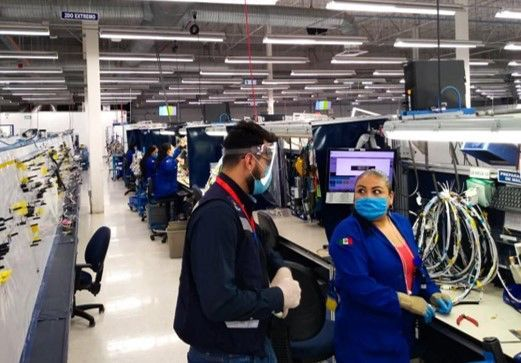
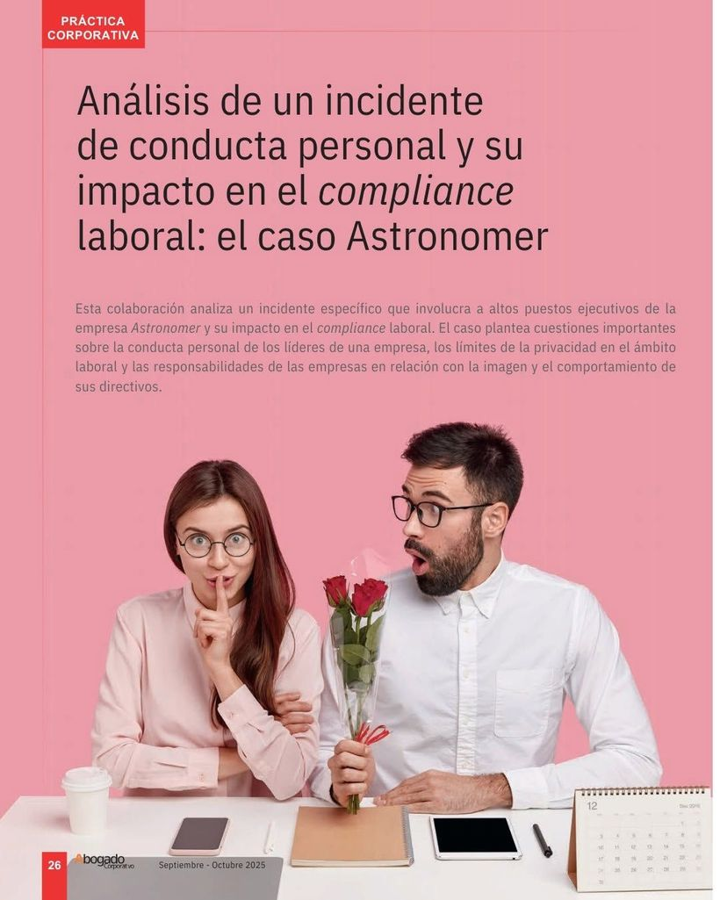

El nuevo valor de la Unidad de Medida y Actualización (UMA)
Análisis de los efectos del ajuste de la UMA en materia laboral y de seguridad social.
Leer notaArtículos especializados en materia laboral, de seguridad social y compliance, publicados por la Mtra. Dayana Reyes López en revistas jurídicas de referencia.
Análisis de los efectos del ajuste de la UMA en materia laboral y de seguridad social.
Leer notaGuía sobre los requerimientos de información en las plataformas del IMSS e INFONAVIT.
Leer notaLas claves de la reforma al esquema de vacaciones y sus efectos para las empresas.
Leer notaObligaciones en materia laboral derivadas de la NOM-003-STPS-2023.
Leer notaUna retrospectiva a los 80 años del Instituto Mexicano del Seguro Social.
Leer notaCambios más relevantes para el registro de prestadores de servicios u obras especializadas.
Leer nota
Análisis del Programa de Inspección anual 2023 de la STPS.
Leer notaEl procedimiento de consulta para la legitimación de contratos colectivos de trabajo.
Leer notaConsecuencias de la no legitimación y el papel del Centro Federal de Conciliación y Registro Laboral.
Leer notaObligaciones patronales en materia de reparto de utilidades (PTU).
Estrategias para que las empresas se ajusten al nuevo salario mínimo.

Estudio de cómo un incidente de conducta personal puede comprometer el compliance laboral de una organización.